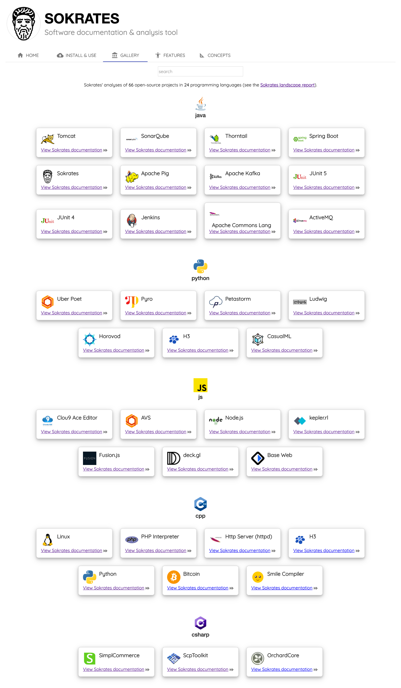

Begin With the End in Mind: Sokrates Reports
Before we zoom into the details of Sokrates, let’s first see what insights Sokrates can give you. Sokrates makes visible the size, complexity, and coupling of software. More specifically, Sokrates generates several views on your source code, describing the overall source code characteristics, duplication, components, dependencies, conditional complexity, etc.
Explore Sokrates Gallery
In this book, you will find many details about Sokrates and the way it processes source code. However, if you find this discussion too abstract, Sokrates website provides a gallery with the results of analyses of 66 open-source projects in 24 programming languages. Each project includes both the results of Sokrates analyses as well as a configuration file used to configure the analysis.
 Figure 1: The screenshot of the Sokrates’ gallery. The gallery is a collection of Sokrates’ projects, with the analysis of popular open-source projects.**
Sokrates Reports
“Story tells the facts. Facts do not tell the story.” Story-based inquiry: a manual for investigative journalists
Sokrates’ reports are the result of Sokrates’ analyses. The reports shedding light on your source code from different angles.
 Figure 1: The screenshot of the index page of the Sokrates reports for the Tomcat project.
Figure 1: The screenshot of the index page of the Sokrates reports for the Tomcat project.
Source Code Overview Report
The Sokrates’ Overview report presents the basic facts about your source code and Sokrates analysis, answering the following two questions:
- Which files are includes in and excluded from the analysis?
- How are files classified (main, test, build, generated…)?
To learn more:
- See an example of a Sokrates Overview Report.
- Learn more about how Sokrates scopes the files.
Duplication Report
The Sokrates duplication report presents the duplicates in your code, answering the following questions:
- How much duplication is there overall?
- How is duplication distributed per file type?
- How is duplication distributed per logical decomposition (i.e., per component)?
- How much of duplication is there between the components?
- What are the biggest duplicates?
- What are the most frequently duplicated pieces of code?
To learn more:
- See an example of a Sokrates Duplication Report.
- Learn more about how Sokrates calculates duplication.
Components and Dependencies Report

Logical decomposition is a representation of the source code organization, where each file needs to end up in only one logical component. The Sokrates visualizes the components and dependencies among them, answering the following questions:
- What logical decompositions have you defined?
- How many components are they in each logical decomposition?
- How big are the components? What are the most prominent or smallest components?
- What are the dependencies among the components? Where are they?
To learn more:
- See an example of a Sokrates Components and Dependencies Report.
- Learn more about how Sokrates analyzes logical decompositions.
Cross-Cutting Concerns Report

Cross-cutting concerns are aspects of a software system that you cannot cleanly decompose from the rest of the system. Typical examples include security and logging.
Sokrates analyses cross-cutting concerns, answering the following questions:
- How many cross-cutting concerns have you defined?
- How many files are in each concern? How many lines of code?
- Is there an overlap between concerns (the same file being in multiple concerns)? How much of the overlay is there (number of files, lines of code)?
To learn more:
- See an example of a Sokrates Cross-Cutting Report.
- Learn more about how Sokrates analyzes cross-cutting concerns.
File Size Report
File size measurements show the distribution of size of files.
Files are classified in four categories based on their size (lines of code): 1-200 (small files), 200-500 (medium size files), 501-1000 (long files), 1001+ (very long files).
To learn more:
- See an example of a Sokrates File Size report.
- Learn more about how Sokrates analyzes file size.
File History Report
To learn more:
- See an example of a Sokrates File History report.
- Learn more about how Sokrates analyzes file history.
Unit Size Report

Unit size measurements show the distribution of size of units of code (methods, functions…).
Units are classified in four categories based on their size (lines of code): 1-20 (small units), 20-50 (medium size units), 51-100 (long units), 101+ (very long units).
To learn more:
- See an example of a Sokrates Unit Size report.
- Learn more about how Sokrates analyzes units.
Conditional Complexity Report

Conditional complexity (also known as cyclomatic complexity) is a software metric (measurement), used to indicate the complexity of a program. It is a quantitative measure of the number of linearly independent paths through a program’s source code.
Conditional complexity is measured at the unit level (methods, functions…).
Units are classified in four categories based on the measured McCabe index: 1-5 (simple units), 6-10 (medium complex units), 11-25 (complex units), 26+ (very complex units).
To learn more:
- See an example of a Sokrates Conditional Complexity report.
- Learn more about how Sokrates analyzes units.
Detailed Metrics Report

A list of all measurements.
To learn more:
- See an example of a Sokrates Metrics report.
- Learn more about how Sokrates works with metrics.
Trend Report

The trend report shows the difference in metrics between the latest measurements and previous reference measurements.
To learn more:
- See an example of a Sokrates Trend report.
- Learn more about how Sokrates analyzes trends.
Goals & Controls Report

Semaphore-like controls, to get warnings based on the range or metric values.
To learn more:
- See an example of a Sokrates Controls report.
- Learn more about how Sokrates analyzes goals and controls.
Landscape Report
The Socrates landscape analysis a utility that aggregates and indexes the results of Sokrates analyses, providing a centralized and uniform on the results of multiple Sokrates projects. The analysis is called landscape because it draws a map of all projects that you want to view from one place.
To learn more:
- See an example of a Sokrates Landscape report.
- Learn more about how Sokrates creates the lanscape report.